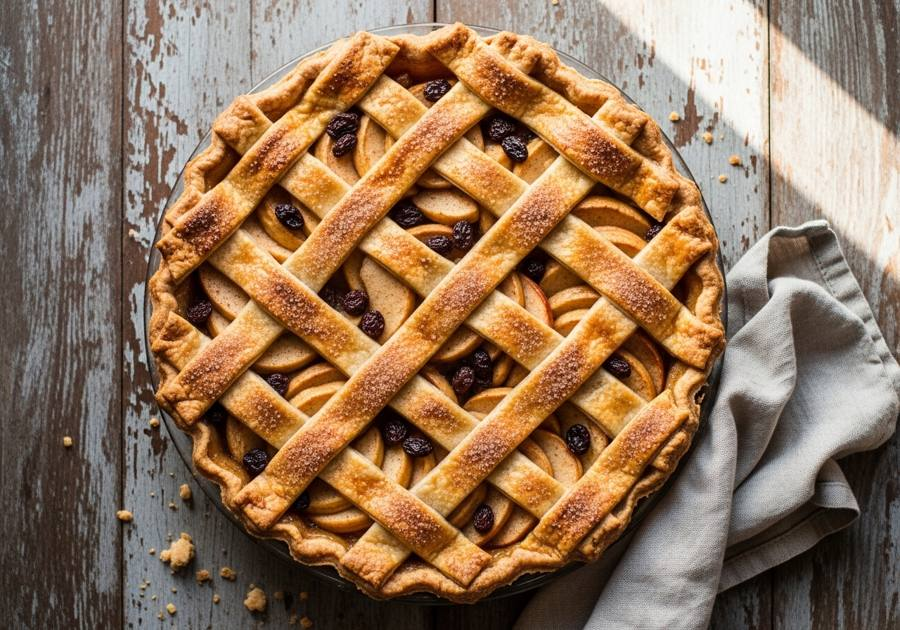

← Alle recepten

🍽 12 punten
⏱ Voorbereiding: 30 min
🔥 Bereiding: 1 uur
Σ Totaal: 1 uur 30 min
Ingrediënten
300 g bloem
200 g koude roomboter
160 g lichtbruine basterdsuiker
snufje zout
1 ei
1,5 kg goudrenetten
100 g rozijnen
75 g suiker
2 tl kaneel
scheutje citroensap
2 el paneermeel
Bereiding
Verwarm de oven voor op 175 graden Celsius. Splits het ei. Kneed de bloem, boter, suiker, zout en de helft van het ei tot een samenhangend deeg. Bewaar de andere helft van het ei voor later. Vet een springvorm (24 cm) in. Bekleed de bodem en de randen van de vorm met tweederde van het deeg. Schil de appels en snijd deze in parten. Meng de appelparten met de rozijnen, suiker, kaneel en het citroensap. Strooi het paneermeel op de bodem van het deeg in de springvorm. Verdeel hierover het appelmengsel. Maak van het resterende deeg repen en leg deze als een raster over de vulling. Bestrijk het deegraster met de overgebleven helft van het ei. Bak de appeltaart 60 minuten in de voorverwarmde oven. Laat de taart afkoelen in de vorm voordat je deze serveert.
Importeer in Pestle: deel deze URL naar de app.